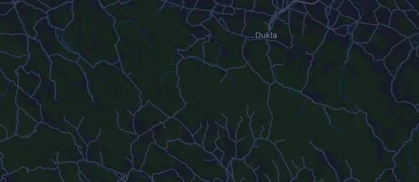

Łemkowyna Trail 150 (Łemkowyna Ultra-Trail®) 149,2 km
- Distance
- 149,2 km
- Højdemeter
- ↑ 4.644 m
- Højeste punkt
- 842 m o.h.
- Underlag
- Terræn og sti
- Karakter
- Meget kuperet
Højdeprofil
Forbered dig med Mila
Mila er en løbecoach i en app. Lægger du et løb ind i din plan, planlægger coachen ugerne frem til start efter din form og giver dig en tidsprognose og en plan for tempo, væske og energi på ruten.

Den rette træning. Den rette dag.
Ruten

Om ruten
Łemkowyna Trail 150 (Łemkowyna Ultra-Trail®) er et trailløb på 149,2 km i Krynica-Zdrój, Polen. Ruten har 4.644 højdemeter stigning og 4.754 højdemeter fald, 31 m pr. km, og regnes dermed som meget kuperet. Det højeste punkt ligger 842 m o.h. og det laveste 312 m o.h.
Den største stigning begynder ved km 117,3: 374 højdemeter på 8,7 km med 4,3 % i snit, op til 760 m o.h. I alt har ruten 34 stigninger på mindst 25 højdemeter; den sidste begynder ved km 141,4.
Der er én maksimaltid langs ruten.
I Mila-appen beskriver coachen ruten i detaljer på dit sprog og planlægger dit tempo og din energi til den.
Stigninger
| Begynder ved | Længde | Højdemeter | Hældning | Top (m o.h.) |
|---|---|---|---|---|
| km 0,0 | 3,9 km | 269 m | 6,9 % | 842 |
| km 6,5 | 3,2 km | 112 m | 3,5 % | 739 |
| km 11,7 | 1,1 km | 64 m | 5,8 % | 603 |
| km 13,3 | 3 km | 197 m | 6,5 % | 740 |
| km 22,2 | 4 km | 364 m | 9,0 % | 837 |
| km 28,0 | 1,7 km | 226 m | 13,3 % | 760 |
| km 33,0 | 5,3 km | 209 m | 3,9 % | 685 |
| km 42,1 | 4 km | 147 m | 3,7 % | 654 |
| km 46,7 | 1,2 km | 33 m | 2,8 % | 641 |
| km 48,3 | 2,8 km | 192 m | 6,8 % | 814 |
| km 53,3 | 430 m | 26 m | 6,1 % | 745 |
| km 53,8 | 930 m | 49 m | 5,3 % | 791 |
| km 58,6 | 1,3 km | 125 m | 9,5 % | 687 |
| km 61,0 | 1,6 km | 53 m | 3,3 % | 532 |
| km 62,8 | 770 m | 31 m | 4,0 % | 560 |
| km 64,0 | 1,7 km | 140 m | 8,0 % | 681 |
| km 69,8 | 2,3 km | 240 m | 10,4 % | 558 |
| km 72,4 | 1,3 km | 69 m | 5,5 % | 620 |
| km 75,7 | 1.000 m | 57 m | 5,7 % | 611 |
| km 77,5 | 1,2 km | 25 m | 2,1 % | 613 |
| km 80,6 | 2,9 km | 160 m | 5,4 % | 615 |
| km 84,0 | 2,9 km | 44 m | 1,5 % | 634 |
| km 90,9 | 3,3 km | 331 m | 10,2 % | 685 |
| km 96,7 | 1,1 km | 30 m | 2,8 % | 464 |
| km 98,7 | 1,9 km | 80 m | 4,2 % | 487 |
| km 102,8 | 1,1 km | 47 m | 4,3 % | 449 |
| km 104,0 | 2,1 km | 133 m | 6,4 % | 573 |
| km 106,7 | 840 m | 46 m | 5,6 % | 536 |
| km 109,3 | 4,2 km | 226 m | 5,4 % | 603 |
| km 117,3 | 8,7 km | 374 m | 4,3 % | 760 |
Før start
Startsted
Krynica-Zdrój
Maksimaltider
| Ved | Senest |
|---|---|
| km 149,2 | kl. 12:00 |
Obligatorisk udstyr
- backpack/hip bag
- water container (1 litre minimum)
- drinking cup (120ml minimum); water bottles and flasks are not allowed as the cu
- head lamp with fully charged batteries
- replacement torch with fully charged batteries (not a phone light or a light bui
- survival blanket (140x200cm minimum)
- whistle (can be built into the backpack)
- elastic band + sterile dressing
- valid ID or passport
- cash – 50 PLN minimum
- charged mobile phone with roaming enabled, with the organiser's emergency number
- runner number, worn visibly for the whole course
- full hand gloves
- hat/buff
- long trousers or leggings (3/4-length with long socks also accepted, as long as
- long sleeve top – minimum 150 grams
- waterproof jacket with hood
- footwear appropriate for mountain runs
- red backlight (phone lights not allowed); must be on at the back from dusk till
- GPS tracker, switched on, if the organiser provides one
Kilde: ultralemkowyna.pl, hentet 16. oktober 2026
Ofte stillede spørgsmål
Hvornår løbes Łemkowyna Trail 150 (Łemkowyna Ultra-Trail®) 149,2 km?
Løbet blev afviklet lørdag den 17. oktober 2026. Datoen for næste udgave er ikke fastlagt endnu.
Hvor langt er Łemkowyna Trail 150 (Łemkowyna Ultra-Trail®) 149,2 km, og hvor mange højdemeter er der?
Løbet er 149,2 km langt med 4.644 højdemeter stigning og 4.754 højdemeter fald. Det højeste punkt ligger 842 m o.h.
Hvordan er ruten på Łemkowyna Trail 150 (Łemkowyna Ultra-Trail®) 149,2 km?
Ruten regnes som meget kuperet, med 31 højdemeter pr. km i snit. Den har 34 stigninger på mindst 25 højdemeter; den største begynder ved km 117,3: 374 højdemeter på 8,7 km. Ruten går fra start til et mål et andet sted. Underlaget er terræn og sti.
Er der maksimaltider på Łemkowyna Trail 150 (Łemkowyna Ultra-Trail®) 149,2 km?
Ja, ifølge arrangøren: km 149,2: kl. 12:00.
Hvordan fordeler jeg farten på Łemkowyna Trail 150 (Łemkowyna Ultra-Trail®) 149,2 km?
Gå efter en jævn indsats frem for et jævnt tempo: lad farten falde på stigningerne, hent den igen, når det flader ud, og hold igen de første kilometer. De største stigninger begynder ved km 0,0, km 22,2, km 90,9 og km 117,3. I Mila får du en tempoplan til netop denne rute efter din egen form.
Flere løb som dette
Flere løb i nærheden
- Półmaraton Warszawski 21 km4. april 2027 · Warszawa, Polen
- Cracovia Maraton 42,2 km18. april 2027 · Kraków, Polen
- Bieg Rzeźnika 80 km28. maj 2027 · Komańcza, Polen
- LOTTO 25. Poznań Maraton im. Macieja Frankiewicza 42,3 kmDato ikke fastlagt · Poznań, Polen
Forbered dig med Mila
Den rette træning. Den rette dag.
Oplysningerne kommer fra rutefilen og arrangørens information. Tjek dato, starttider og regler hos arrangøren.
Mila er ikke tilknyttet, sponsoreret af eller godkendt af arrangøren eller løbets sponsorer. Navne og varemærker tilhører deres ejere. Arrangør eller rettighedshaver? Bed om ændring eller fjernelse